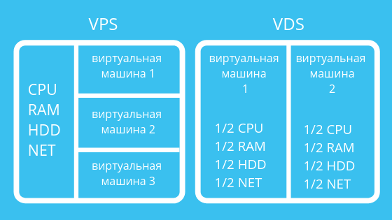

VPS (Virtual Private Server) и VDS (Virtual Dedicated Server) — по сути одно и то же. Это виртуальные серверы, эмулирующие работу физического сервера и предоставляемые хостером в аренду клиенту с максимальными привилегиями: установка операционной системы и программного обеспечения, root-доступ (права главного администратора). Клиент получает в пользование выделенные аппаратные ресурсы сервера с полным управлением и контролем, но, возможно, не все, имеющиеся на машине. То есть на одном физическом сервере запущено несколько виртуальных серверов под разных клиентов, но на каждом из них администратор (заказчик) может работать так же, как на отдельной физической машине, при этом арендная плата существенно ниже, чем за выделенный сервер.
Виртуализация такого сервера осуществляется в рамках операционной системы (контейнеризация) с помощью специальных технологий (FreeBSD Jail, Parallels Virtuozzo Containers, iCore Virtual Accounts, OpenVZ и других). Клиент может работать в персональном изолированном программном окружении с правами суперпользователя, но не может поменять саму операционную систему или её ядро. Также существуют разные лимитирования, основанные на политике хостера (например, непрерывная доступность ресурсов сервера).
Виртуализация этого вида сервера осуществляется на аппаратном уровне. Это физическое выделение ресурсов машины, точнее эмуляция её физических элементов при помощи специальных технологий (VMWare, LDoms, KVM, Microsoft Hyper-V, XEN). Клиент не только получает в постоянное пользование ресурсы CPU, дискового пространства и памяти, но также может устанавливать иную операционную систему и совершать её модификации вплоть до смены настроек BIOS.
Этот тип хост-услуг набирает всё большую популярность в мире благодаря соотношению цена/качество. Под качеством здесь понимается в первую очередь широта возможностей управления своими хостируемыми проектами и простота масштабируемости выделяемых ресурсов. Помимо владельцев или системных администраторов сайтов, его особенно любят разработчики для собственно разработки и тестирования нового ПО. А бизнесу VPS/VDS хостинг помогает сократить расходы.
